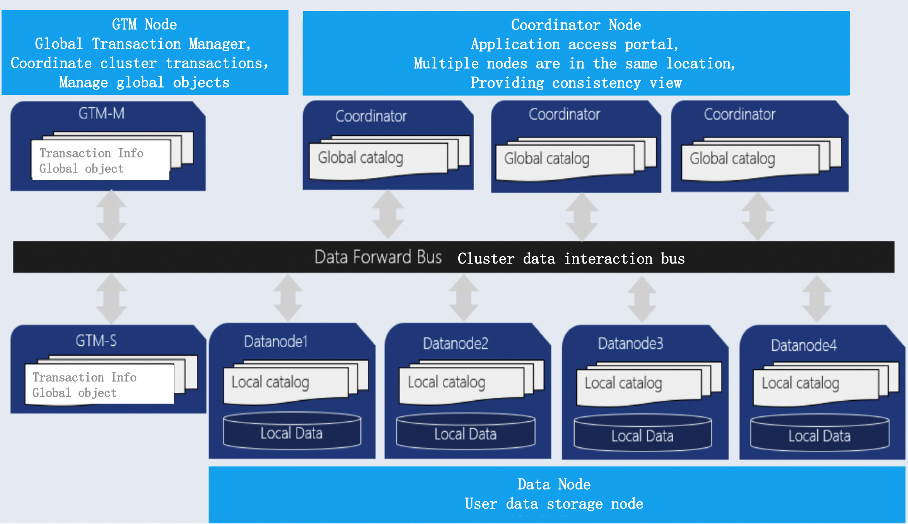

Quick Start
What's OpenTenBase
OpenTenBase is a relational database cluster platform that provides write reliability and multi node data synchronization. You can configure OpenTenBase on one or more hosts and store OpenTenBase data on multiple physical hosts. There are two ways to store data tables: distributed or replicated. When sending query SQL to OpenTenBase, OpenTenBase will automatically send query statements to data nodes and get the final results.
OpenTenBase is a distributed cluster architecture (as shown in the figure below), which is a distributed share nothing architecture mode, each node is independent and processes its own data. After processing, the results may be summarized to the upper layer or transferred between nodes. Each processing unit communicates with each other through the network protocol, with better parallel processing and expansion ability, which also means that the OpenTenBase cluster can be deployed on the basic x86 server.

Here are three modules of OpenTenBase
-
Coordinator Node: (CN for short)
Application access portal is responsible for data distribution and query planning. Multiple nodes are in the same location, and each node provides the same database view. In terms of function, CN only stores the global metadata of the system, not the actual user data.
-
Datanode Node: (DN for short)
Each DN stores the partition of user data. In function, DN node is responsible for completing the request of executing CN distribution.
-
GTM Node: (Global Transaction Manager)
GTM is responsible for the management of cluster transaction information, as well as the global objects of the cluster, such as sequence.
Next, let's show how to build a OpenTenBase cluster environment from the source code
OpenTenBase source code compilation and installation
System Requirements:
Memory: 8G RAM minimum
OS: TencentOS 2, TencentOS 3, OpenCloudOS 8.x, CentOS 7, CentOS 8, Ubuntu 18.04
Dependencies
yum -y install git sudo gcc make readline-devel zlib-devel openssl-devel uuid-devel bison flex cmake postgresql-devel libssh2-devel sshpass libcurl-devel libxml2-devel
or
apt install -y git sudo gcc make libreadline-dev zlib1g-dev libssl-dev libossp-uuid-dev bison flex cmake libssh2-1-dev sshpass libxml2-dev language-pack-zh-hans
Create User 'opentenbase'
# 1. Make directory /data
mkdir -p /data
# 2. Add user
useradd -d /data/opentenbase -s /bin/bash -m opentenbase # add user opentenbase
# 3. Set password
passwd opentenbase # set password
# 4. Add users to the wheel group
# For RedHat
usermod -aG wheel opentenbase
# For Debian
usermod -aG sudo opentenbase
# 5. Enable sudo permissions for the wheel group (via visudo)
visudo
# Then uncomment the line "% wheel", save and exit
Building
su - opentenbase
cd /data/opentenbase/
git clone https://github.com/OpenTenBase/OpenTenBase
export SOURCECODE_PATH=/data/opentenbase/OpenTenBase
export INSTALL_PATH=/data/opentenbase/install/
cd ${SOURCECODE_PATH}
rm -rf ${INSTALL_PATH}/opentenbase_bin_v5.0
chmod +x configure*
./configure --prefix=${INSTALL_PATH}/opentenbase_bin_v5.0 --enable-user-switch --with-libxml --disable-license --with-openssl --with-ossp-uuid CFLAGS="-g"
make clean
make -sj
make install
chmod +x contrib/pgxc_ctl/make_signature
cd contrib
make -sj
make install
Installation
Use OPENTENBASE_CTL tool to build a cluster, for example: a cluster with a global transaction management node (GTM), a coordinator(COORDINATOR) and two data nodes (DATANODE).

Preparation
1. Install opentenbase and import the path of opentenbase installation package into environment variable.
PG_HOME=${INSTALL_PATH}/opentenbase_bin_v5.0
export PATH="$PATH:$PG_HOME/bin"
export LD_LIBRARY_PATH="$LD_LIBRARY_PATH:$PG_HOME/lib"
export LC_ALL=C
2. Disable SELinux and firewall (optional)
vi /etc/selinux/config
set SELINUX=disabled
# Disable firewalld
sudo systemctl disable firewalld
sudo systemctl stop firewalld
3. Create the *.tar.gz package for initializing instances.
cd ${PG_HOME}
tar -zcf ${INSTALL_PATH}/opentenbase-5.21.8-i.x86_64.tar.gz *
cd ${INSTALL_PATH}
Cluster startup steps
Generate and fill in configuration file opentenbase_config.ini .
opentenbase_ctl tool can generate a template for the configuration file. You need to fill in the cluster node information in the template. After the opentenbase_ctl tool is started, opentenbase_ctl directory will be generated in the current user's home directory. After entering " prepare config" command, the configuration file template that can be directly modified will be generated in opentenbase_ctl directory.
- Description of each field in opentenbase_config.ini
| Configuration Category | Configuration Item | Description |
|------------------------|-------------------|----------------------------------------------------------------------------|
| instance | name | Instance name, available characters: letters, numbers, underscores, e.g.: opentenbase_instance01 |
| | type | distributed represents distributed mode, requires gtm, coordinator and data nodes; centralized represents centralized mode |
| | package | Software package. Full path (recommended) or relative path to opentenbase_ctl |
| gtm | master | Master node, only one IP |
| | slave | Slave nodes. If n slave nodes are needed, configure n IPs here, separated by commas |
| coordinators | master | Master node IPs, automatically generate node names, deploy nodes-per-server nodes on each IP |
| | slave | Slave node IPs, the number is an integer multiple of master |
| | | Example: If 1 master 1 slave, the number of IPs is the same as master; if 1 master 2 slaves, the number of IPs is twice that of master |
| | nodes-per-server | Optional, default 1. Number of nodes deployed on each IP. Example: master has 3 IPs, configured as 2, then there will be 6 nodes |
| | | cn001-cn006 total 6 nodes, 2 nodes distributed on each server |
| datanodes | master | Master node IPs, automatically generate node names, deploy nodes-per-server nodes on each IP |
| | slave | Slave node IPs, the number is an integer multiple of master |
| | | Example: If 1 master 1 slave, the number of IPs is the same as master; if 1 master 2 slaves, the number of IPs is twice that of master |
| | nodes-per-server | Optional, default 1. Number of nodes deployed on each IP. Example: master has 3 IPs, configured as 2, then there will be 6 nodes |
| | | dn001-dn006 total 6 nodes, 2 nodes distributed on each server |
| server | ssh-user | Username for remote command execution, needs to be created in advance, all servers should have the same account for simpler configuration management |
| | ssh-password | Password for remote command execution, needs to be created in advance, all servers should have the same password for simpler configuration management |
| | ssh-port | SSH port, all servers should be consistent for simpler configuration management |
| log | level | Log level for opentenbase_ctl tool execution (not the log level of opentenbase nodes) |
1. Create a configuration file opentenbase_config.ini for the instance
mkdir -p ./logs
touch opentenbase_config.ini
vim opentenbase_config.ini
- For example, if I have two servers 172.16.16.49 and 172.16.16.131, the typical configuration of a distributed instance distributed across the two servers is as follows. You can copy this configuration information and make modifications according to your deployment requirements. Don't forget to fill in the ssh password configuration.
# Instance configuration
[instance]
name=opentenbase01
type=distributed
package=/data/opentenbase/install/opentenbase-5.21.8-i.x86_64.tar.gz
# GTM nodes
[gtm]
master=172.16.16.49
slave=172.16.16.50,172.16.16.131
# Coordinator nodes
[coordinators]
master=172.16.16.49
slave= 172.16.16.131
nodes-per-server=1
# Data nodes
[datanodes]
master=172.16.16.49,172.16.16.131
slave=172.16.16.131,172.16.16.49
nodes-per-server=1
# Login and deployment account
[server]
ssh-user=opentenbase
ssh-password=
ssh-port=36000
# Log configuration
[log]
level=DEBUG
- Similarly, the configuration of a typical centralized instance is as follows. Don't forget to fill in the ssh password configuration.
# Instance configuration
[instance]
name=opentenbase02
type=centralized
package=/data/opentenbase/install/opentenbase-5.21.8-i.x86_64.tar.gz
# Data nodes
[datanodes]
master=172.16.16.49
slave=172.16.16.131
nodes-per-server=1
# Login and deployment account
[server]
ssh-user=opentenbase
ssh-password=
ssh-port=36000
# Log configuration
[log]
level=DEBUG
2. Execute command for instance installation.
opentenbase_ctl install -c opentenbase_config.ini
====== Start to Install Opentenbase test_cluster01 ======
step 1: Make *.tar.gz pkg ...
Make opentenbase-5.21.8-i.x86_64.tar.gz successfully.
step 2: Transfer and extract pkg to servers ...
Package_path: /data/opentenbase/opentenbase_ctl/opentenbase-5.21.8-i.x86_64.tar.gz
Transfer and extract pkg to servers successfully.
step 3: Install gtm master node ...
Install gtm0001(172.16.16.49) ...
Install gtm0001(172.16.16.49) successfully
Success to install gtm master node.
step 4: Install cn/dn master node ...
Install cn0001(172.16.16.49) ...
Install dn0001(172.16.16.49) ...
Install dn0002(172.16.16.131) ...
Install cn0001(172.16.16.49) successfully
Install dn0001(172.16.16.49) successfully
Install dn0002(172.16.16.131) successfully
Success to install all cn/dn master nodes.
step 5: Install slave nodes ...
Install gtm0002(172.16.16.131) ...
Install cn0001(172.16.16.131) ...
Install dn0001(172.16.16.131) ...
Install dn0002(172.16.16.49) ...
Install gtm0002(172.16.16.131) successfully
Install dn0002(172.16.16.49) successfully
Install dn0001(172.16.16.131) successfully
Install cn0001(172.16.16.131) successfully
Success to install all slave nodes.
step 6:Create node group ...
Create node group successfully.
====== Installation completed successfully ======
- When you see the words 'Installation completed successfully', it means that the installation has been completed. Enjoy your opentenbase journey to the fullest.
- You can check the status of the instance
[opentenbase@VM-16-49-tencentos opentenbase_ctl]$ ./opentenbase_bin_v5.0/bin/opentenbase_ctl status -c opentenbase_config.ini
------------- Instance status -----------
Instance name: test_cluster01
Version: 5.21.8
-------------- Node status --------------
Node gtm0001(172.16.16.49) is Running
Node dn0001(172.16.16.49) is Running
Node dn0002(172.16.16.49) is Running
Node cn0001(172.16.16.49) is Running
Node dn0002(172.16.16.131) is Running
Node cn0001(172.16.16.131) is Running
Node gtm0002(172.16.16.131) is Running
Node dn0001(172.16.16.131) is Running
[Result] Total: 8, Running: 8, Stopped: 0, Unknown: 0
------- Master CN Connection Info -------
[1] cn0001(172.16.16.49)
Environment variable: export LD_LIBRARY_PATH=/data/opentenbase/install/opentenbase/5.21.8/lib && export PATH=/data/opentenbase/install/opentenbase/5.21.8/bin:${PATH}
PSQL connection: psql -h 172.16.16.49 -p 11000 -U opentenbase postgres
Usage
- Connect to CN Master node to execute SQL
export LD_LIBRARY_PATH=/home/opentenbase/install/opentenbase/5.21.8/lib && export PATH=/home/opentenbase/install/opentenbase/5.21.8/bin:${PATH}
$ psql -h ${CoordinateNode_IP} -p ${CoordinateNode_PORT} -U opentenbase -d postgres
postgres=# create database test;
CREATE DATABASE
postgres=# create user test with password 'test';
CREATE ROLE
postgres=# alter database test owner to test;
ALTER DATABASE
postgres=# \c test test
You are now connected to database "test" as user "test".
test=> create table foo(id bigint, str text) distribute by shard(id);
CREATE TABLE
test=> insert into foo values(1, 'tencent'), (2, 'shenzhen');
COPY 2
test=> select * from foo;
id | str
----+----------
1 | tencent
2 | shenzhen
(2 rows)
- Concluding remarks
This document is just a quick start guide for users, demonstrating how to build a complete OpenTenBase cluster step by step from the source code. Refer to other documents for OpenTenBase features, use, optimization, problem location, etc.